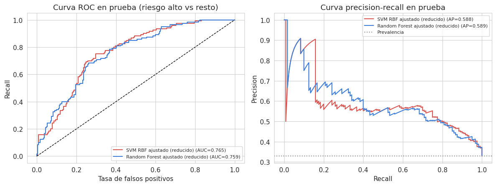
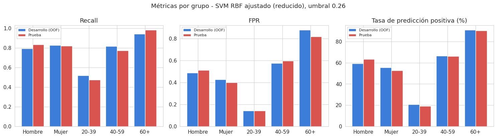

Machine Learning
Riesgo de diabetes en pacientes mexicanos
Un modelo que ordena a los pacientes por su probabilidad de riesgo alto para decidir a quién hacerle primero una prueba confirmatoria, sin usar glucosa ni HbA1c.
- Tipo
- Proyecto académico, 2026
- Datos
- 2,549 adultos de 2,055 hogares
- Modelo final
- SVM con kernel RBF
- Stack
- Python, scikit-learn, SHAP

El problema
Las pruebas que confirman la diabetes son un recurso limitado en muchos programas de salud. La idea fue usar datos que muchas veces ya están disponibles (edad, sexo, peso, estatura, lípidos, insulina, ácido úrico) para priorizar a quién atender primero.
El modelo no diagnostica: su resultado siempre pasa por revisión de personal de salud.
Datos sin fuga
Usé una encuesta nacional de salud tipo ENSANUT con 24 variables. La glucosa y la HbA1c quedaron fuera a propósito, porque son las variables con las que se construyó el objetivo: con ellas el modelo se vería perfecto en papel y no serviría en la práctica.
También encontré y limpié valores centinela (por ejemplo, un peso de 222.22 repetido) que generaban IMC imposibles.
Validación por hogar
Los integrantes de una misma familia comparten hábitos, así que nunca los separé entre entrenamiento y prueba. Usé StratifiedGroupKFold agrupado por hogar, con validación cruzada repetida (15 evaluaciones), y guardé un conjunto de prueba de 365 pacientes que solo usé una vez, al final.
Modelos comparados
| Modelo | ROC-AUC (validación cruzada) |
|---|---|
| SVM RBF (final) | 0.764 |
| Random Forest | 0.756 |
| SVM lineal | 0.752 |
| Gradient Boosting | 0.746 |
| Regresión logística | 0.723 |
| Red neuronal (MLP) | 0.720 |
| Árbol de decisión | 0.674 |
| Modelo de referencia (Dummy) | 0.505 |
Ajusté hiperparámetros con GridSearchCV y RandomizedSearchCV, y elegí el modelo final con una matriz de decisión ponderada (recall, precisión, estabilidad, interpretabilidad y costo), no solo por la métrica más alta.
Resultado
82.5%
de los pacientes de riesgo alto detectados en el conjunto de prueba (99 de 120), con un ROC-AUC de 0.765. El umbral de decisión (0.26) se eligió para garantizar un recall mínimo de 0.80, porque en salud no detectar un caso cuesta más que una prueba extra.
Qué aprendió el modelo

Sesgos y límites
El desempeño es parejo por sexo (recall de 0.83 en hombres y 0.82 en mujeres), pero baja a 0.47 en adultos de 20 a 39 años, donde el riesgo alto es menos frecuente. Lo documenté en la ficha del modelo como una limitación que el personal de salud debe conocer.

Listo para usarse
- Pipeline completo serializado con verificación de integridad (SHA-256).
- Script de inferencia con validación de entradas: campos faltantes, tipos incorrectos y valores fuera de rango.
- Plan de monitoreo con PSI para detectar cambios en la población.
- Ficha del modelo con usos permitidos, riesgos y criterios de actualización.
Recursos
Reporte técnico (PDF) Ver código en GitHub
El reporte explica cada decisión del proyecto con sus tablas y figuras, e indica en qué sección del notebook se genera cada resultado.